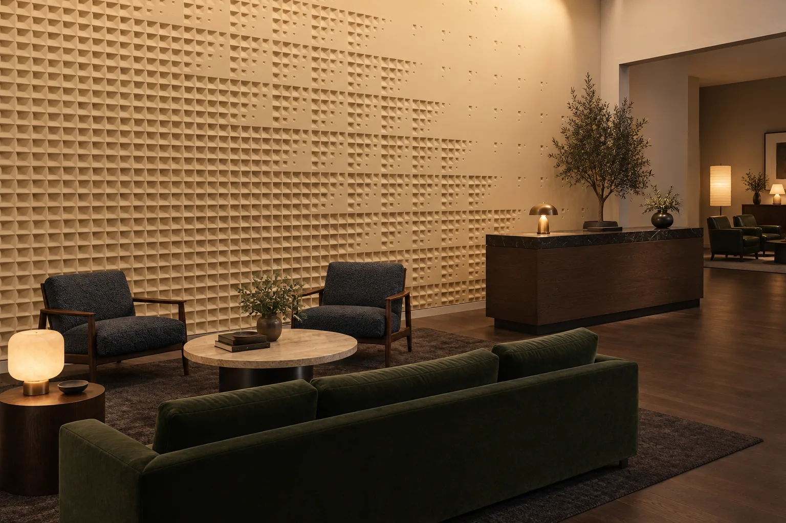

Guests take in a lobby on the move. They see the reception wall from the door, before anyone has spoken to them, and a minute later they stand at the desk with the same wall a few steps away. A lobby feature wall has to hold at both distances, and most of the trouble with a lobby wall comes from designing it for only one of them.
This guide goes through the decisions that settle a lobby wall in cast relief: the scale of the pattern, the depth of the relief, the angle of the light, the joints and the finish, and what to send us to start.

Seen from the Door, Seen at the Desk
From across the lobby, a relief reads as its large rhythm: bands, a gradient, a field of cells. At the desk the eye drops to the edge of each form and the grain of the surface. A pattern chosen from a full-wall render alone can look busy at arm’s length, and one chosen from a close-up alone can disappear from the door.
So the scale of the pattern is chosen against two distances: from the entrance to the wall, and across the desk. Five of our Studio Designs have lobby renders on their pages, and they divide along that line. Accelerando and Melisma are drawn for the long view: one grades its cells in size along the wall, the other runs a fine maze from end to end as a single current. Rondeau and Hemiola reward a closer look, where a single round form, or a block with an opening turned off square, can be read piece by piece. Ricercar’s lattice repeats every 600 mm and, at 6 mm deep, reads as a fine network of lines at the desk.
Depth Is a Lighting Decision
Relief depth on its own says little. Under diffuse general light, or spots aimed at the wall from across the room, even a deep relief flattens; with light grazing the wall at 15 to 30 degrees, a shallow one throws a shadow line at every edge. Ricercar’s relief is 6 mm and the coved grooves of Fugato go 40 mm deep, and both depend on the same thing: where the light comes from.
So fix the light before the depth: the grazer (a linear fitting concealed in a ceiling slot at the wall), its offset from the wall face and its beam angle. On a tall wall the light rakes all the way down from the slot, so a deeper relief throws long shadows that still read from the door; on a lower wall, keep the fitting close to the face and a shallow relief reads sharply.
A raking-angle lighting specification goes with every delivery. Share your lighting plan with us early and the grazer’s offset and angle are agreed before the ceiling is detailed.
Joints, Corners and Columns
A lobby wall is laid from repeated pieces, so the joints belong to the design. On most of the designs the pattern runs across the panel joints and the wall reads as one surface; Hemiola is the exception, laid as blocks with a 1.5 mm joint that belongs to its look. Where the pattern is cut at the edges of the wall is set out on the layout drawing.
Column faces and outside corners are worked out on the same drawing. Pieces that wrap a column, turn a corner or follow a curved wall are cast as Bespoke, in the same motif, so the design can carry on to the surfaces around the desk. Where the wall includes Bespoke pieces, plan the programme on the Bespoke lead time of at least 6 weeks.
Two Ways to Start
Studio Designs are relief we have drawn. The mould is made for your order, you approve the master before anything is cast, and the lead time is 4 weeks after contract and advance for orders up to 50 m².
Bespoke starts from your drawing: a sketch, a mark from the hotel’s identity, a pattern from the interior’s own language. We cast it the way you drew it. Bespoke takes at least 6 weeks.
Surface and Finish
Pieces come paint-ready, to be painted on site in the lobby’s colour, or with an artisan finish applied in the workshop. Matte surfaces show relief best; on a gloss, reflections sit where the shadow should be.
What to Send for a First Layout
1. The wall. Gross and net area, ceiling height, what the wall is built of (concrete, masonry or a stud partition), its distance from the entrance, and where the desk and seating stand.
2. The design. A Studio Design, or your own drawing or reference image.
3. The light. Fitting type and distance from the wall, if known. If not, we settle it with you.
4. The finish. Paint-ready or artisan finish, warm or cool, and any colour references.
From these we prepare a layout drawing. Once the design is approved, the technical data sheet and the installation drawing follow.
Delivery and Installation
Panels are hand-cast in our Sapanca workshop in Lumina PMAG™ — Polymer Modified Composite Gypsum, and delivered ex-works Sapanca (EXW). They are fixed to the wall with a polymer adhesive, or with a rail system on metal stud and plasterboard walls. Where the project needs it, Studio Luminant installs, quoted as a separate line per project. The panels are for interiors; exterior and continuously wet areas are outside their scope. A 25 mm flat panel weighs about 35–40 kg/m², and deeper relief weighs more; the weight and structural guide sets out what the wall has to carry.
Frequently Asked Questions
How deep should the relief be on a hotel lobby feature wall?
It depends on the light more than on the wall. Under a graze of 15 to 30 degrees, a 6 mm relief such as Ricercar throws a clear shadow line; on a tall wall lit from a ceiling slot, a deeper relief throws longer shadows that read from the door. Among the Studio Designs with a published depth, relief runs from 6 mm (Ricercar) to 40 mm (Fugato).
Can the lobby design continue onto columns and corners?
Yes. Column faces and outside corners are worked out on the layout drawing, and pieces that wrap a column, turn a corner or follow a curved wall are cast as Bespoke, in the same motif.
What is the lead time for a lobby wall?
Studio Designs: 4 weeks after contract and advance, for orders up to 50 m². Bespoke: at least 6 weeks, and a wall that mixes the two follows the Bespoke programme. Delivery is ex-works Sapanca (EXW), and installation, where needed, is quoted separately per project.
How are the panels fixed?
With a polymer adhesive, following the installation drawing; metal stud and plasterboard walls need a rail system instead. On the heavier designs the bottom course also sits on a fixed ledger, and the wall surface is checked first. Lumina PMAG™ is for interior walls; exterior and continuously wet areas are outside its scope.
Tell Us About Your Lobby
Send the room, the wall dimensions and the timeline; we’ll read them and write back.
Send your drawing